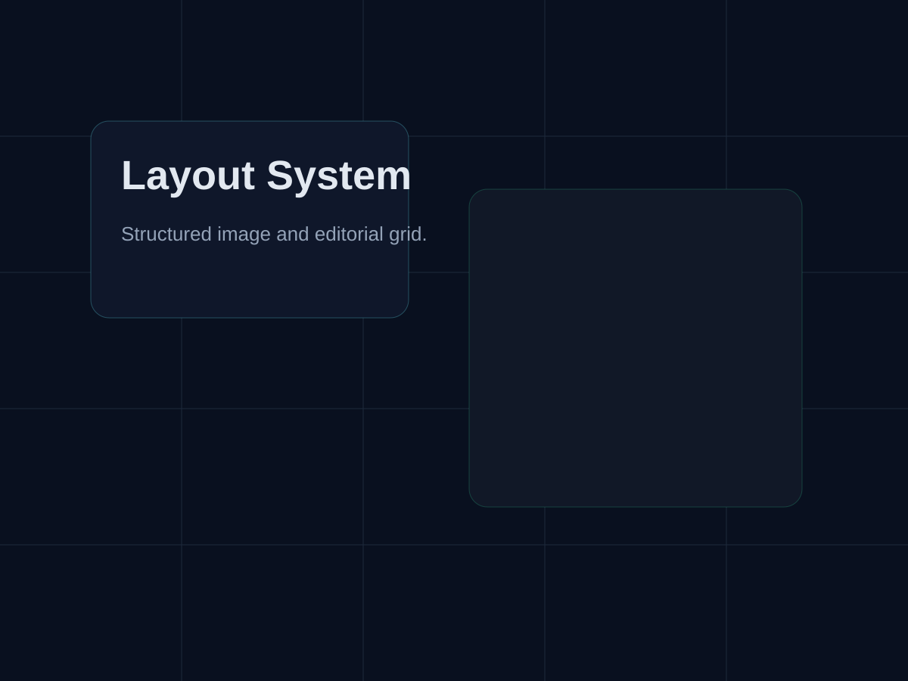
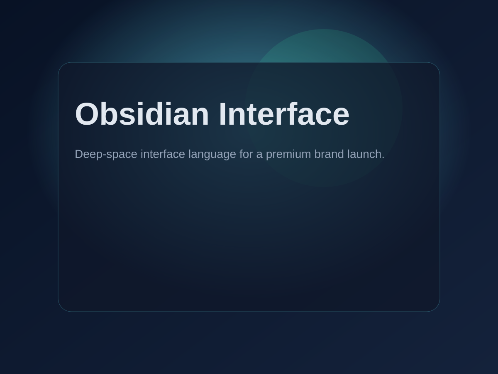

Website Design
Obsidian Interface
A futuristic brand site exploring deep-space visual language, motion-led storytelling, and a premium editorial layout for a design-led technology launch.
Project Description
A futuristic brand site exploring deep-space visual language, motion-led storytelling, and a premium editorial layout for a design-led technology launch.
Project Summary
A launch-ready project page that frames a high-tech website concept through cinematic copy, modular content, and a focused gallery.
Image Gallery


Technologies Used
Python
HTML
CSS
Static Generation